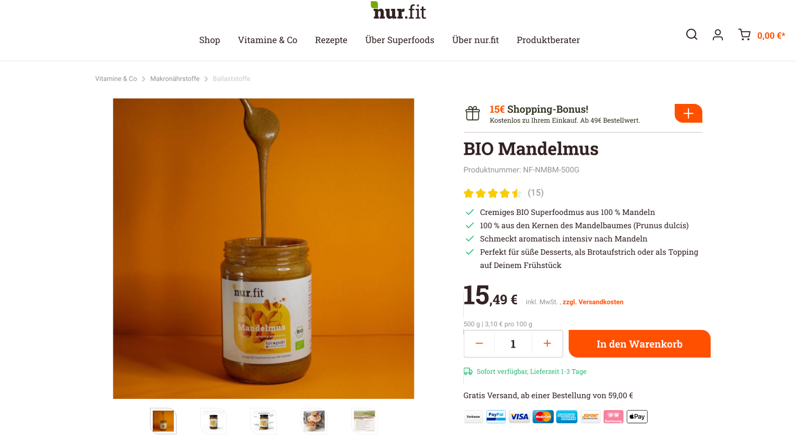
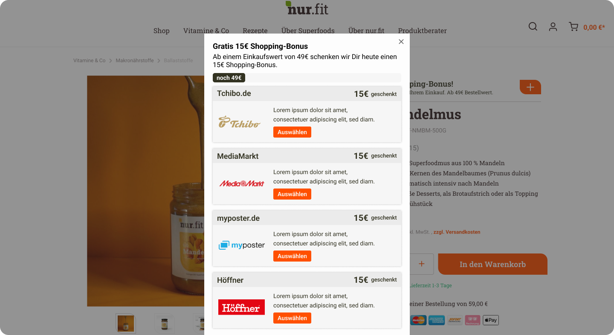
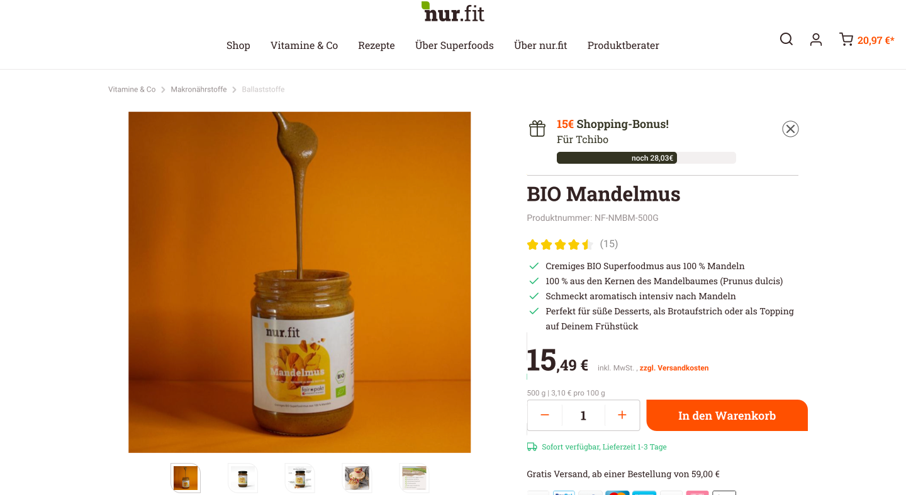
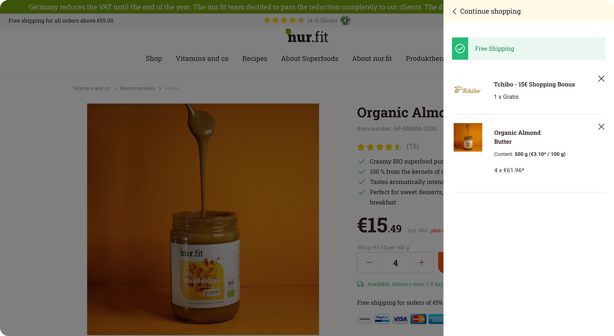
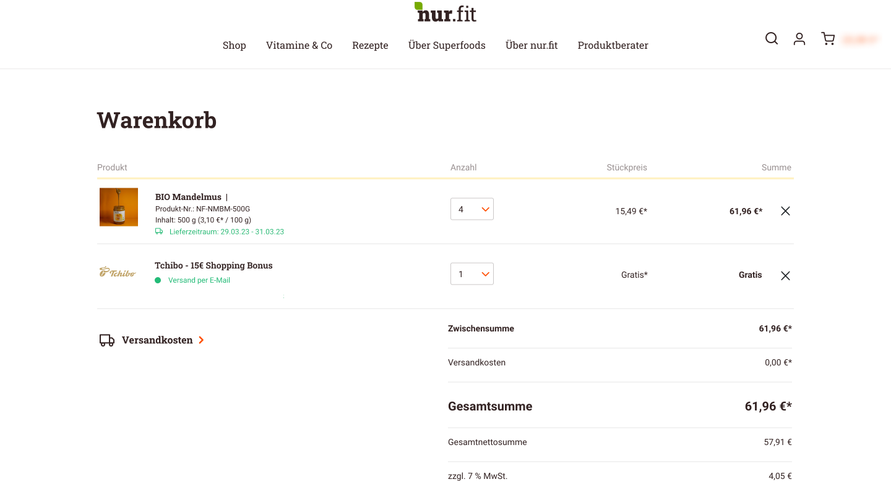
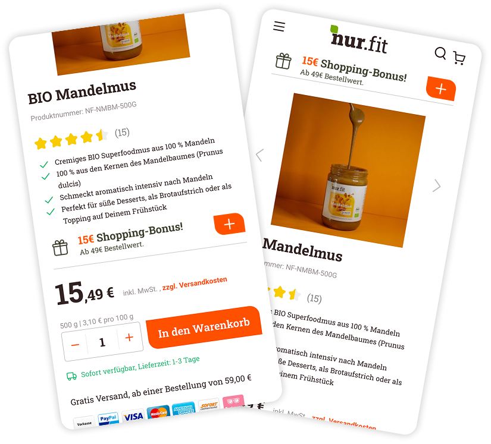
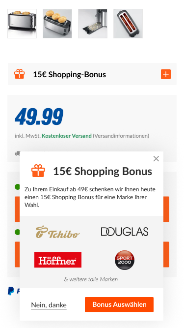
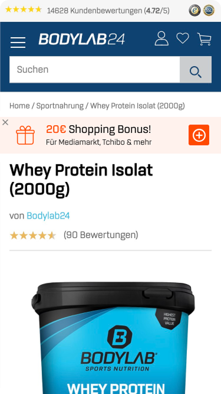
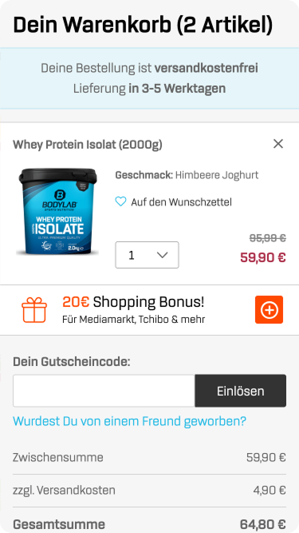
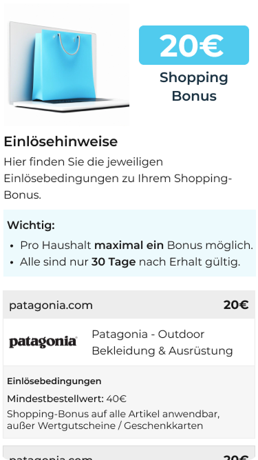

Finding 01
Usability
Not mobile-friendly.
The widget covered the entire mobile screen and wasn't usable with larger fingers.
Bringing partner rewards into the shopping experience — before the decision is made.
Loopingo connects e-commerce stores with partner brands through cashback incentives. Uplift brings these offers into the shopping experience — not after checkout. A previous attempt had been shelved after low engagement; my role was to redesign the experience from the ground up.

Cashback platforms like Payback, Shoop, and Cashback World all operate the same way — offers are surfaced after the purchase is complete, as a reward for something the user has already decided to do. E-commerce sites do have inline incentives, but these are their own promotions: discount codes, loyalty points, site-specific deals. Not offers from external partners.
Rethink how and where the cashback widget appears across the shopping journey — and design an experience that's clear enough to earn user trust without disrupting the host site's flow.
A flexible cashback experience that adapts to varied platforms while staying consistent and non-intrusive.
Before touching the design, I ran guerrilla testing with 5 people on the existing widget to understand how it was actually being perceived — not how we assumed it was.
The widget covered the entire mobile screen and wasn't usable with larger fingers.
Appeared too quickly and blocked the shopping experience before users could orient themselves.
Cashback rewards weren't attractive or personalised enough to motivate engagement.
Wrong messages and unclear states left users unsure of what was happening.
These findings reframed the brief. The core problem wasn't visual — it was trust and clarity.
Based on the research, I built a persona and user journey map to ground design decisions in actual behaviour rather than assumptions.
Sarah shops across fashion, beauty, and home categories. She likes incentives, but too many similar offers make comparison tiring. Cashback becomes motivating only when the amount, timing, and conditions are easy to understand.
Users moved quickly from curiosity to confusion. The issue wasn't just visibility — it was trust and understanding. Cashback was positioned as a feature, but not explained as a benefit. Without clear context, users didn't see it as part of their decision-making.
Ideation focused on four questions: where in the flow should the widget appear? How prominent should it be? How does it follow the user once a voucher is selected? We explored two directions through low-fidelity wireframes.

Positioning — Relocating from the homepage to the product page for better alignment with the target group's preferences.
Inline Widget — Enhances user experience without distraction. Adds aesthetic charm without blocking functionality.
Minimum Order Value — Progress bar to help users track minimum order value requirement effortlessly and provide a clear indication upon fulfilment.
Seamless Integration — Implemented in small and big baskets to seamlessly display selected coupon through the journey.
With the flow defined, I moved into high fidelity. The primary constraint was adaptability — the widget needed to sit within varied partner site layouts without requiring visual changes on their end. The final UI covered all core states: product page, offer selection, basket with active voucher, and checkout.





After development, an A/B test comparing two placements: the widget at the top of the product page versus alongside the pricing area. Top placement drove a 20% higher click-through rate — more users noticed and opened the widget. But selection rates remained low across both versions. This told us placement alone wasn't the answer. Users were seeing the widget, but something else was keeping them from engaging.
Higher click-through rate compared to side placement.

Unmoderated testing conducted with 10 participants and wrote the test script myself.
The session ran in two parts:
Identify confusion in messaging and interaction
Understand how users engage with and move through the journey
Assess whether cashback motivates purchase decisions
User feedback was overwhelmingly positive, with many users pointing to the high cashback offers as a key factor in their decision to make purchases on the site. Providing consistency the cashback banner/button throughout the user journey is critical.

Tested different headline variations, layout options, and colour treatments to find what felt native across partner sites.

Surfaced recognisable brand names upfront — familiarity with partners built immediate confidence in the offer.

Allowed users to add vouchers directly from the basket — removing the need to navigate back to the product page to reselect.

Added a dedicated conditions page to build trust — users could review terms before committing, reducing hesitation.
of website visitors selected a coupon from the widget.
completed the purchase with a coupon.
Led the discovery phase — mapping existing workflows and identifying friction points.
Explored and workshopped placement strategies, then designed the end-to-end flow and UI.
Designed the research script in two phases — first observing behaviour without revealing the feature, then testing with full context.
Identified iteration priorities from findings and designed the updated components.
The redesign resolved the core issues that had caused the first attempt to fail — clearer attribution, better information, a more integrated placement. Early numbers confirmed the widget could drive engagement when the experience made sense to users.
This project reminded me how hard trust is to build — and how quickly it can disappear. At first, we thought a visual refresh would solve the problem, but it became clear that trust comes from copy, structure, and design all working together. The only way to know if it's working is to keep testing and listening to what users are actually experiencing.
It was also my first time running unmoderated online testing. Since we were working with a limited budget, we couldn't talk to participants in real time, and looking back, that definitely affected the depth of some insights. If I did it again, I'd approach the script differently to better understand what users were really thinking.